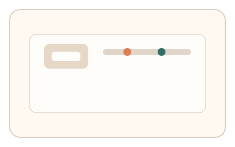
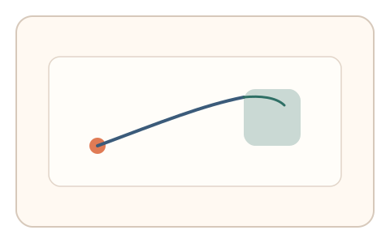
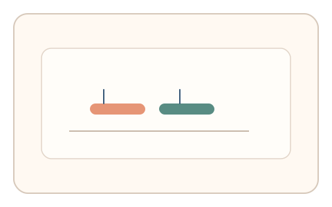

#16
生物肌肉与鼠标运动
已扩展
双通道灵敏度切换
在单次拖拽中切换灵敏度，验证按键与指针的时序协调与动作连续性。
概念原文
用户按住键盘键切换鼠标灵敏度，在单次拖拽中完成粗定位与细定位。系统评估两通道切换的时序协调性和动作连续性。
引入多通道协调，让脚本需要同时模拟“时序与意图”。
研究背景
多通道协同控制是人类交互的重要特征，涉及按键与指针同步调整。通过在任务中要求切换灵敏度完成粗定位与细定位，可观察通道切换的时序一致性与轨迹连续性，从而区分脚本与真实操控。
核心机制
- 设置“按键切换灵敏度”的规则。
- 要求用户在一次拖拽中完成粗定位与细定位。
- 记录按键事件与速度曲线的对齐关系。
- 评估切换瞬间的轨迹连续性与微调行为。
用户流程
- 步骤 1：用户按住键进入低灵敏度模式。
- 步骤 2：完成粗定位后释放键进行细调。
- 步骤 3：系统分析时序一致性并判定。
判定信号
按键事件与速度曲线同步性
真实操控会体现明确的通道切换时序。
切换点轨迹连续性
人类切换通常平滑而非突变。
判定逻辑
检测按键切换时序与速度曲线是否一致，并评估切换处的轨迹连续性；若事件序列与轨迹无关联则判异常。
对抗面
- 脚本同步发送键鼠事件
- 预录轨迹与切换序列
防御与缓解
- 随机化切换条件与灵敏度曲线
- 加入微扰以检测实时适应
- 与抖动谱或过冲‑回拉信号耦合
可达性与风险
提供非按键切换的替代方式（如滑杆或按钮），兼容移动端与无键盘设备。
- 对新手用户存在学习成本
- 移动端或触控设备可能不适配
可视化状态

状态 1：灵敏度切换
按键控制灵敏度并启动拖拽。

状态 2：粗细定位
粗定位后切换到细定位完成对准。

状态 3：时序判定
检测按键事件与速度曲线对齐。
参考资料
Bimanual coordination
说明双通道协同控制的规律。
Hand–eye coordination
说明手眼协调与多通道协作。